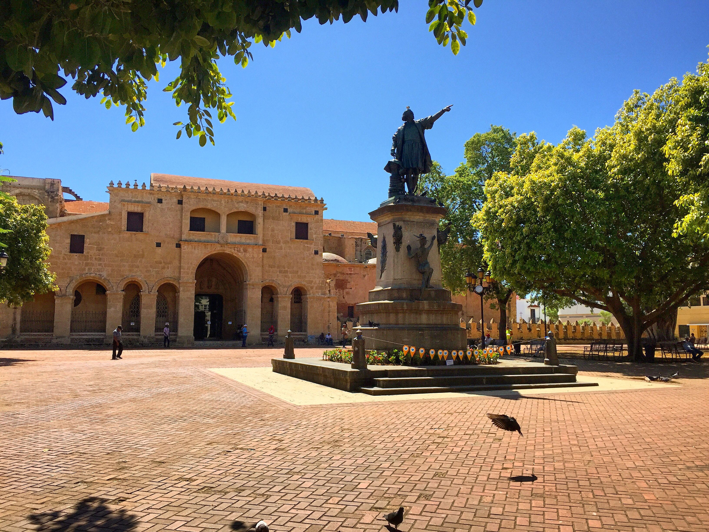

Lugares turisticos
Santo Domingo
Santo Domingo es la capital de República Dominicana y una de las ciudades más antiguas del Caribe. Su centro
histórico amurallado y con adoquines, la Zona Colonial, tiene edificios que datan del siglo XVI, incluida la
catedral, que fue la primera construida en el Nuevo Mundo. En la Plaza de España, bordeada de cafés, se
encuentra el palacio Alcázar de Colón. Actualmente, es uno de los diversos museos de la ciudad que exhiben obras
de arte medievales y renacentistas destacadas.
Plaza Colón
Esta es una de las plazas más reconocidas de Santo Domingo. En el centro se encuentra la estatua de Cristóbal
Colón y a pocos metros está la Catedral Primada de América. A los alrededores de la plaza hay diferentes
restaurantes, actividades culturales y mucho movimiento como para entretenerte un rato.

Parque Nacional Los Tres Ojos
Muy cerca del Faro a Colón se encuentra el Parque Nacional Los Tres Ojos. En el exterior es un parque normal
y corriente con mucha vegetación. La maravilla comienza cuando vas bajando hacia la caverna y te encuentras
con el lago y sus tres divisiones, las cuales dan pie al nombre de Los Tres Ojos. Aunque, en realidad hay un
cuarto lago que se puede ver desde afuera que no cuenta como otro «ojo».
Fortaleza Ozama.
La Fortaleza Santo Domingo o Fortaleza Ozama es uno de los Monumentos Culturales históricos de la Ciudad
Colonial de Santo Domingo, en la República Dominicana. Fue construido por los españoles durante la época
colonial y es el fuerte más antiguo construido por los europeos en América.